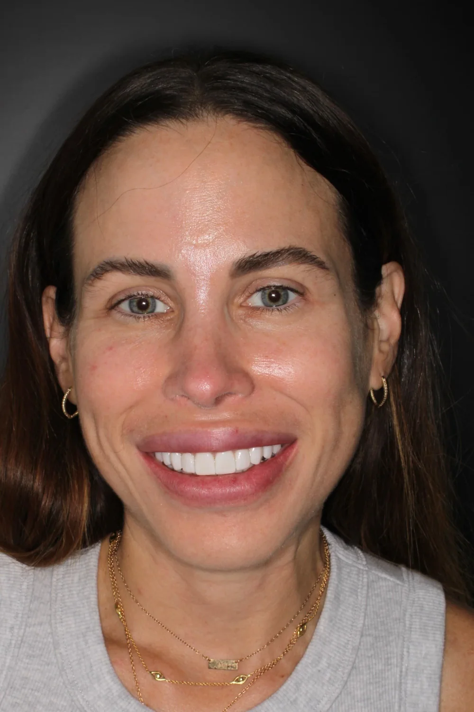
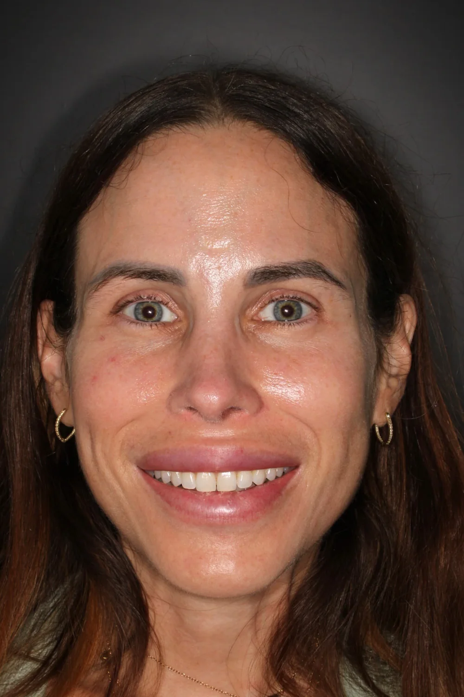
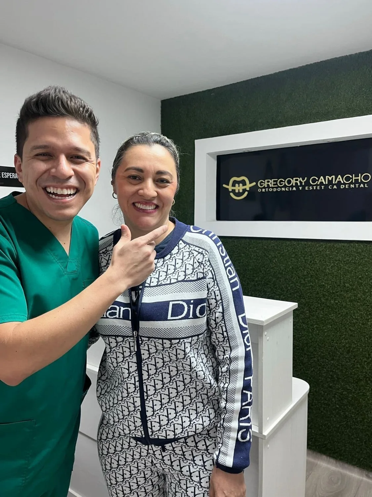

Align
Explore orthodontics and clear aligners. Suitability and follow-up are determined during assessment.
- 01Assessment
- 02Individual plan
- 03Visits & follow-up
Orthodontics, aesthetic dentistry and a clear conversation about the journey ahead. Meet Dr. Gregory Camacho in Bucaramanga.
OPEN THE PLAN EXPLORER ↗
Explore orthodontics and clear aligners. Suitability and follow-up are determined during assessment.

Discuss your smile goals and the aesthetic options that may be appropriate.

Understand the evaluation and stages involved in implant and restorative care.
This explorer explains service areas. It does not recommend treatment or assess suitability.
Use the slider to explore a published case. The images are individual examples, not a prediction.
Photographs from the credited public portfolio. Individual cases do not predict a result.



Dr. Gregory Camacho presents orthodontics, clear aligners, smile design and implants. His practice publishes an international-patient pathway for the US and Canada, with English and Spanish communication.
Official practice website ↗Booking preview · no real appointment is reserved.